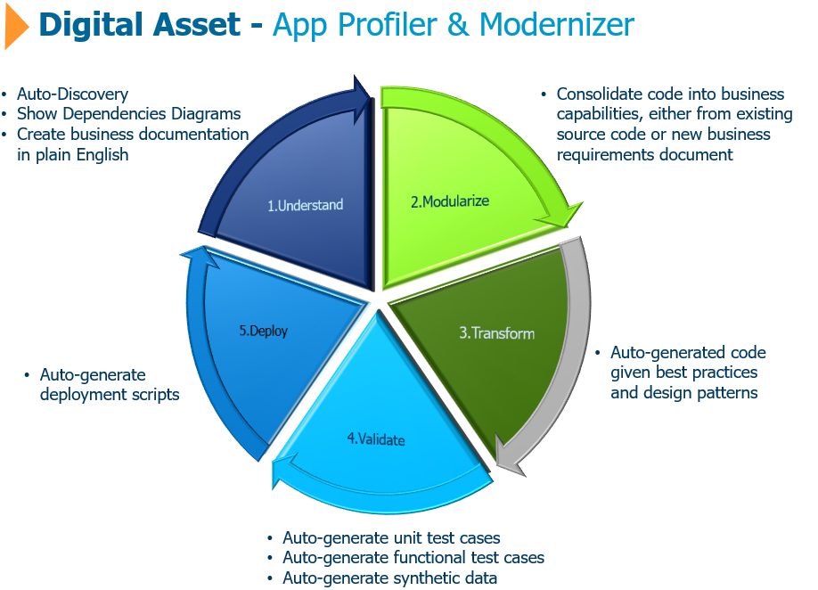

<div style="justify-content: center; padding-top: 50px; padding-left: 50px;">
    
<hr>
<br>
    <button mat-raised-button color="primary" [routerLink]="['/dashboard']" >
        <mat-icon>search</mat-icon> Dashboard
    </button>
</div>